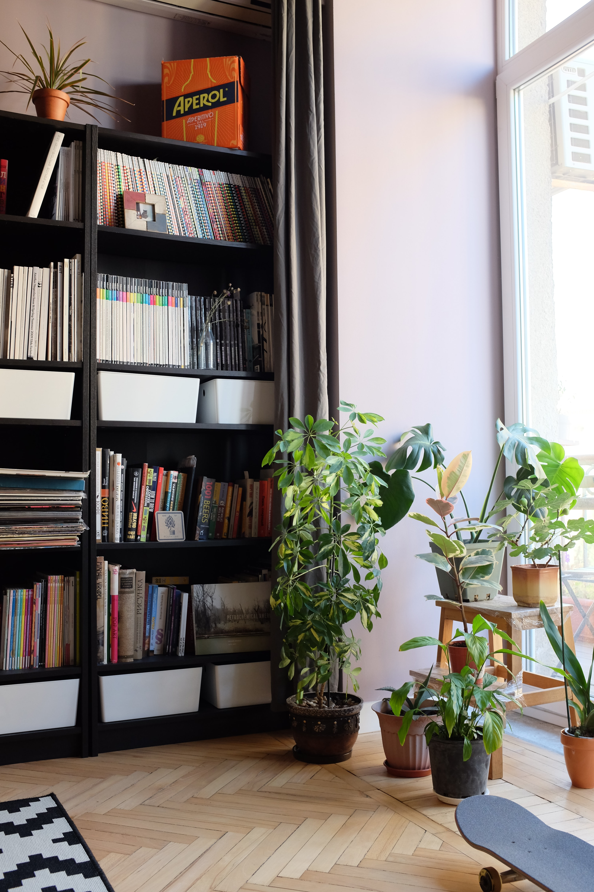
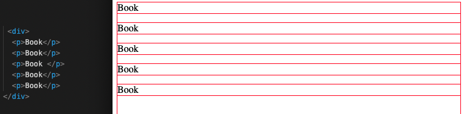
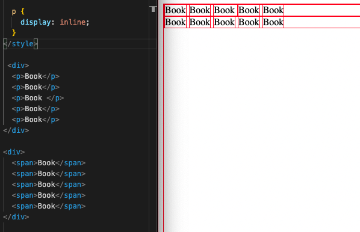
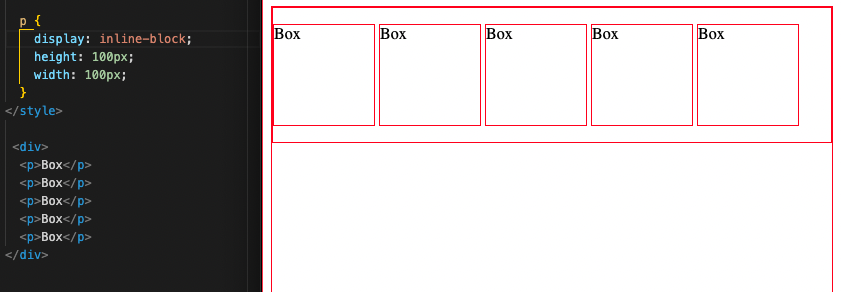

Inline and inline block to me are a little bit like buying a new bookshelf with adjustable shelves and then trying to figure out and organise how to best fit your books and other items on there.
For this topic, we can start by breaking the concept down into 3 different ideas: Block, Inline, and Inline-Block.
Block
So imagine you have your new bookshelf up and you want to organise the few books that you have. You start by putting one book at the left on the top shelf and then go, great that will do for this shelf! Block is like putting one thing on a shelf and telling yourself that it needs the entire width of the shelf for itself. If it’s a massive book, or this is how you like to organise your book(s), then it might work well. But you might also be thinking that there’s so much space to the right and you want to be able to start putting new books in there! What other ways can I do this?
What does this look like in code?
So imagine you have 5 elements ('books'). With the display being block (which <p> elements default as for example) each ‘book’ will just stack on top of each other like this. Each has their own ‘block’ which takes up the whole width of the page, or the whole ‘shelf’.
Inline
So most people with lots of books would think, having one book on each shelf is not the most efficient way to do this. I should probably put them beside each other on the same shelf. That’s what inline does. Imagine though that the books we put together on the same shelf are all of the same height. We can’t obviously have a book that’s twice as high as the shelf we have. So with inline-block the 'books' all line up evenly.
What does this look like in code?
One way to have something inline is to use the <span> element. This automatically will help put things side by side. But if you want to put, lets say, your <p> elements side by side, then with CSS styling you can change the display to 'display:inline'.
Inline-Block
Now, sometimes we don’t want to use a bookshelf just for books. We might also want to stack some boxes in there. Luckily the bookshelf we bought has adjustable shelves! And that’s where inline-block comes in. So you look at the shelf and realise the boxes you have can’t fit. Boom, lets just adjust the shelf so it’s bigger. Now we can stack these bigger boxes beside each other on the same shelf.
So what does this look like in code?
So in CSS we can set the display to display: inline-block. So if you have elements that you’ve styled to have a specific size you can now put them beside each other rather than just sitting on top of each other with 'block', or sitting tightly snug and shrunken side by side with 'inline'.
